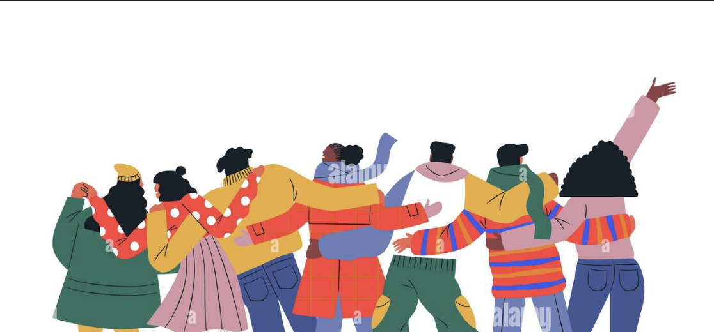

Overview
Beyond romantic status, people are embedded in broader networks of relationships, from close others to more peripheral, weak ties such as coworkers, neighbors, and acquaintances. Drawing on the social convoy model, this project asks whether these different types of ties matter differently for well-being depending on a person's attachment orientation, and whether that pattern holds consistently across the lifespan.
Approach
Across three studies — spanning an existing dataset of older adults, a college sample, and a 21-day daily-diary sample — I tested whether high-quality close ties benefit anxiously attached individuals more, and high-quality weak ties benefit avoidantly attached individuals more. Conducting analyses as of 9/12/26
My Role
I led the design, preregistration, and analysis of all three studies in collaboration with Dr. Jeewon Oh and an international team of collaborators.
Outcomes
To be presented at the Gerontological Society of America (GSA) 2026 Annual Meeting. Manuscript in preparation.